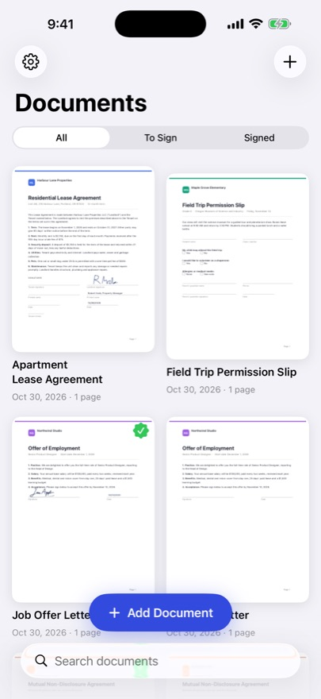
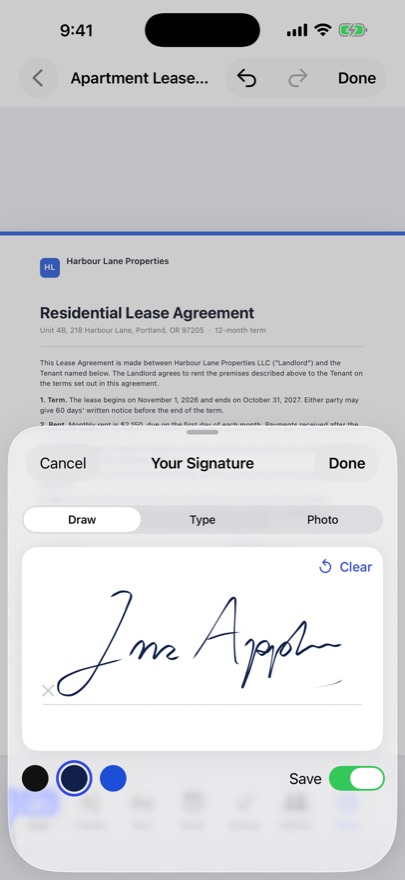
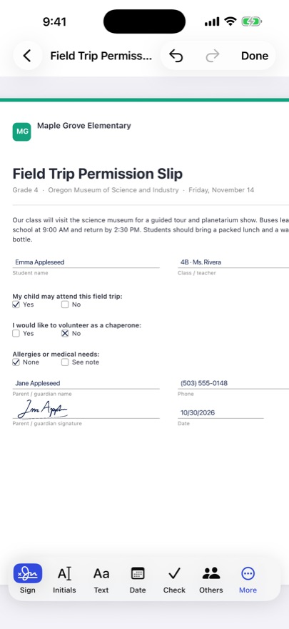
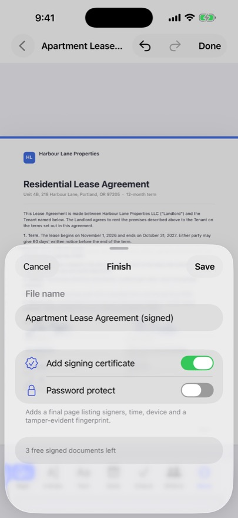

What SignaturePro does
- Draw your signature once and reuse it, or type it, or photo it from paper
- Initials, text, dates, ticks and crosses exactly where you tap
- Initials on every page in one tap
- Opens PDF, Word, Excel, PowerPoint, photos and scans from your camera
- Fillable PDF forms keep their fields
- Hand your phone over so someone else can sign in person
- Signing certificate with a tamper-evident fingerprint, optional password
- Share, email, print or save to Files; your original stays untouched
How to sign a PDF on iPhone
- Open the document. From Mail, Files, Safari or a photo of the paper copy.
- Draw your signature once. It is saved, so next time it is one tap.
- Tap where it goes. Add your signature, initials, the date or a tick exactly where it is needed, or initial every page in one tap.
- Someone else signing?. Hand them your phone and they sign right there in person.
- Send it back. Email, share, print or save to Files. Your original stays untouched.
Pricing
First 3 signed documents free. Unlock Forever $9.99 once. No weekly fees, nothing renews, Family Sharing included.
Popular e-signature apps charge weekly or monthly fees. SignaturePro is $9.99 once.
Privacy
Everything stays on your device. No account, no servers, no tracking. Documents are never uploaded. No account, no ads, no data collected.
Who it's for
Freelancers, landlords and renters, real-estate agents, small business owners, anyone who gets PDFs to sign.
Questions
How do I sign a PDF on my iPhone?
Open the PDF in SignaturePro, draw your signature once, tap where it goes and share the signed copy by email, Messages or Files. It takes about 30 seconds.
Is SignaturePro a subscription?
No. Your first 3 signed documents are free, then Unlock Forever is a single $9.99 payment with Family Sharing. Nothing renews.
Can it open Word documents and photos?
Yes. It opens PDF, Word, Excel and PowerPoint files, photos and scans from your camera.
Can someone else sign on my phone?
Yes. Hand over your iPhone and they sign in person, right there.
Are my documents uploaded?
No. Documents stay on your iPhone. No account, no ads and no data collected.
More iPhone apps you pay for once
- Sound Sleep: Sleep Sounds & Brown Noise App, No Ads
- Parlo: Offline Translator App for iPhone, No Subscription
- Invoice Once: Invoice & Estimate App for Contractors
- Kept: iPhone Storage Cleaner & Duplicate Photo Remover